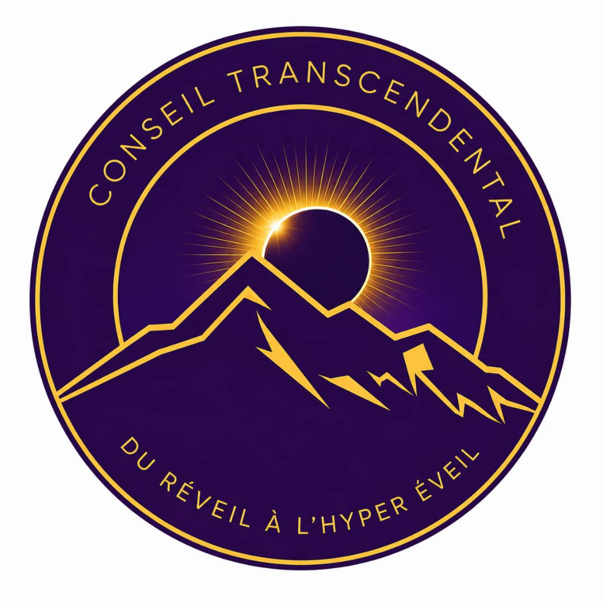
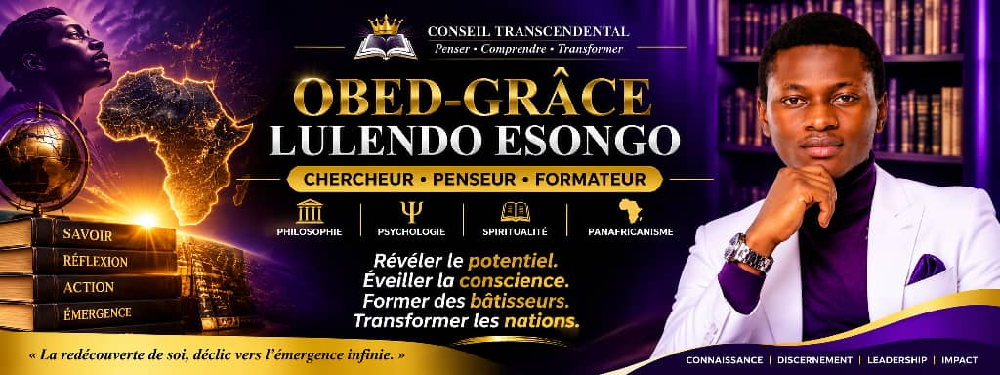

<!DOCTYPE html> 
                 <html lang="français"></html>
               <meta charset="UTF-8">
               <meta name="viewport" content="with=device-width, initial-scale=1.0">                                         
                
               <head>
                
                </imag>
               
                                  <link rel="stylesheet"
                                 href="style.css">  
               <title> Conseil Trancendal</title>
               <nav><a href=""></a> </nav>
               
                </head>
<body>  
        
        <section>         
        <h1> CONSEIL TRANCENDAL</h1>
              <h2>A propros </h2>
              <br>
      <p>
     Le Conseil trancendal est une structure de recherche, est une formation et d'eveil des consciences 
     dedie à la redecourte de soi, à la comprehension de l'existence et au développement intergral de la personne. 
</p>
<p> 
    A travers une approche pluridisciplinaire, il explore les dimensions philosophique, sprirituelle et scientifique afin d'aider chacun à mieux comprendre son identité, sa vocation et son rôle dans la société.
   </p>
   <h2> Création </h2>
   <p> Le conseil trancendal a été créé le 5 janvier 2023</p>
   
   <h3> Notre vision </h3>
  
   <p> Contribuer à l'emergence d'une génération consciente de son identité, de son potentiel et de sa 
        responsabilité, capable d'apporter une transformation durable à la sociéte.
   </p> 
   <h4> Notre Mission</h4>
   <ul>
        <li> Favoriser la redecourte de soi et du sens de l'experience </li>
        <li> Delopper la pensée critique et la capacité d'analyse.</li>
        <li> Forme des hommes et des femmes de caractère.</li>
        <li> Produire et diffuser des connaissances</li>
        <li> Organiser des conferences, formations et recherche.</li>
        <li> Accompagner le developpement intellectuel, moral, sprirituelle et citoyen.</li>
</ul>
<h4>Nos domaine d'intervention</h4>
<ul>
        <li>Philosophie</li>
        <li>Psychologie</li>
        <li>Spritualite</li>
        <li>Histoire </li>
        <li>Science humaine</li>
        <li>Leadership et gouvernance</li>
        <li>Recherche</li>
        <li>Education</li>
        <li> Dévéloppement personnel</li>
</ul>

<h4> A propro du président </h4>
<p> Obed Grâce LULENDO ESONGO</p>
<br>
<bordure>
<image src="OBED.jpg.jpg" alt="Obed"> </imag>
        </image>

</bordure>
<br>
<p> Formateur, conférencier, chercheur en questions existentielles et auteur,il consacre ses traveaux 
à l'etude de l'identité humaine, du sens de l' existence, de la spriritualité, de la philosophie et de sciences humaines. </p>
<P> A travers le conseil trancendal, il oeuvre à Accompagner les individus 
   vers une meilleure comprehension d'eux-mêmes et à promouvoir une transformation personnelle et collective fondée sur la connaissances
   , la responsabilité et l'integrité.
</P>
<br> 

<br>


  <a href="html 2.html"> Page 2 </a> 
  
      <br> <br>
        </section>
</body>
        </html> 